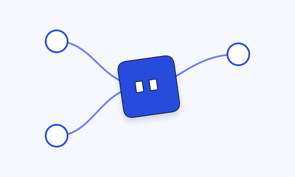
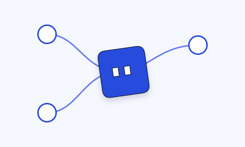

Figma lab export verification
Local diagnostic page. The video is the native Figma timeline export; the SVG is the exported artwork.
E09 — native motion export
E10 — vector export comparison

Figma original render

Browser-rendered SVG export
Figma SVG reimport — inspect effect fidelity